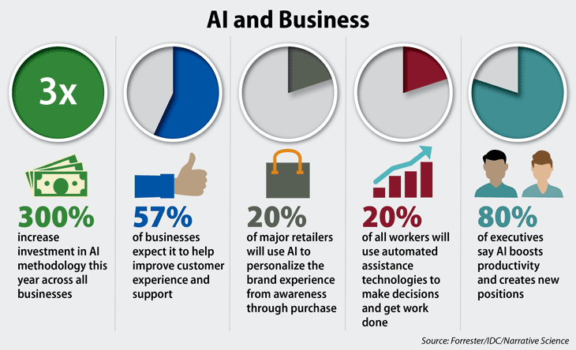
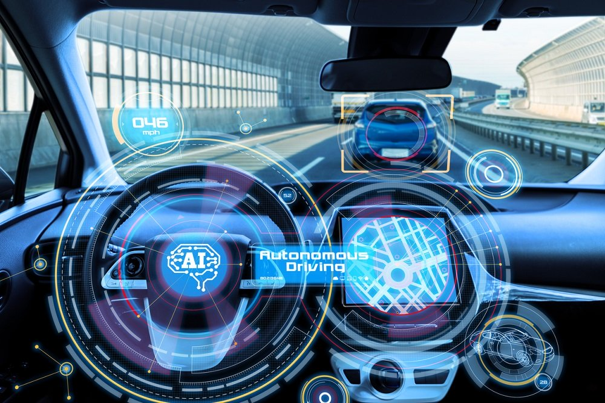

Application of artificial intelligence
1-Artificial Intelligence in Healthcare
Companies use machine learning to better diagnose and diagnose disease faster than humans. One of the best-known technologies is IBM's Watson.
It understands nature and can answer questions asked about it. The system incorporates patient information and other available data sources to form a hypothesis,
where it also identifies the goal to score goals. AI is a research found to mimic human intelligence in computer technology that can benefit both, physician and patients in the following ways:
• By providing a laboratory for the examination, representation and classification of medical information
• By designing a novel tool to support decision making and research
• By integrating careers in medical sciences, software and psychology
• By providing rich discipline of content to future scientific communities.

2-Artificial Intelligence in business
The process of Robotic automation is applied to the most repetitive tasks commonly performed by humans. Machine learning algorithms are integrated into analytics and CRM (Customer Relationship Management) for information on how to best serve customers.
Chatbots are already featured on websites and e-companies to provide instant customer service. Workplace automation is also a talking point between students and IT consultants.

3-AI in education
It uses grading itself, giving teachers more time. It can also assess students and adapt their needs, helping them work to their full potential.

4-AI in autonomous vehicles
Just like humans, autonomous vehicles need to have the senses of the world around them and the sense of collecting, processes and then selecting specific actions based on the information collected.
Automobiles have an advanced tool for collecting data, including long-range radios, cameras, and LIDAR. Each of these technologies is used in different fields and each collects different information.
This information is useless, unless it is processed and some kind of information is taken based on the information collected. This is where artificial intelligence works and can be compared to the human brain.
AI has many applications for these vehicles and among them are the closest:
• Guide the car to a gas station or recharge station when it is low in fuel.
• Adjust travel directions according to known traffic status to find the fastest route.
• Integrate speech recognition through improved communication with passengers.
• Natural language environment and virtual assistive technology.
• The AI of robots will allow us to tackle challenges in caring for the elderly population and allow for longer freedom. It will reduce dramatically, potentially reduce road accidents and fatalities,
and enable the response of catastrophic disasters for example the nuclear meltdown at the fukushima power plant.

5-Cyborg Technology
One of the main limitations of being human is simply our bodies and brains. Researcher Simon Whiteson thinks that in the future, we will be able to expand ourselves into computers and develop more of our natural abilities.
Although many of these cyborg enhancements can be added for convenience, others may serve a practical purpose. Nest's Yoky Matsuka believes that AI will be useful for people with amputated limbs,
because the brain will be able to interact with the robot's limb to give the patient more control. This type of cyborg technology will significantly reduce the limitations that consumers face on a daily basis.
In the future, predictive analytics and artificial intelligence can play an increasingly important role in content design and software development.
Open source data and the collection of artificial intelligence will provide equal opportunities for global technology and artificial intelligence can be the future for all sectors of health, the environment, public safety and security.
Links :